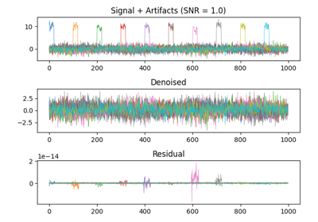
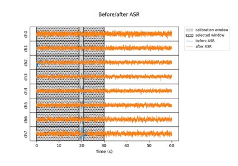

Examples gallery#
Below is a list of example scripts showing basic usage for most methods in MEEGkit.
The examples can be browsed directly on Github.

Ringing artifact reduction example
Ringing artifact reduction example

Sparse time artifact removal on simulated data
Sparse time artifact removal on simulated data
Endpoint-corrected Hilbert transform (ECHT) phase estimation
Endpoint-corrected Hilbert transform (ECHT) phase estimation
DSS example

ASR example
Remove line noise with ZapLine
Remove line noise with ZapLine
Robust detrending examples
Example demonstrating STAR + DSS
Example demonstrating STAR + DSS
Multiway canonical correlation analysis (mCCA)
Multiway canonical correlation analysis (mCCA)
Rhythmic Entrainment Source Separation (RESS) example
Rhythmic Entrainment Source Separation (RESS) example
mCCA example: Sinusoidal target in separable noise
mCCA example: Sinusoidal target in separable noise
Causal phase estimation example
Causal phase estimation example

Task-related component analysis for SSVEP detection
Task-related component analysis for SSVEP detection